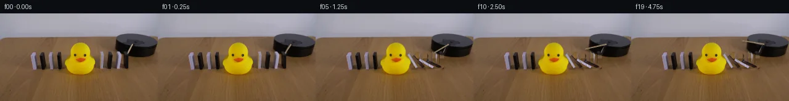

![首帧]()

Round 00
2026-11-05T01:46:10.374285+00:00像素候选变化代码 +336/−0inspection 更新
pixels e2f59fcc6dde8f10 · code 27b165053557df1e
查看本轮 generate.py 真实 diff
--- previous/generate.py
+++ current/generate.py
@@ -0,0 +1,336 @@
+"""Local pixel reconstruction of a motor driven domino cascade.
+No external inputs, models, rendering engines, or generated-image viewing.
+"""
+from pathlib import Path
+import json, math
+import numpy as np
+import cv2
+from PIL import Image, ImageDraw
+from scipy.ndimage import gaussian_filter
+from artifact_io import save
+
+ROOT=Path(__file__).resolve().parent
+S=4
+W,H=256,144
+original=np.array(Image.open(ROOT/'first_frame.png').convert('RGB'))
+hi=cv2.resize(original,(W*S,H*S),interpolation=cv2.INTER_CUBIC).astype(np.float32)
+
+# Source vertices: bottom front left/right, bottom rear left/right,
+# top front left/right, top rear left/right, all measured on the input.
+# In order of propagation, from the motor toward the duck.
+TILES=[
+ dict(x=201.,y=90.,height=24.,thick=4.,depth=(3.,-2.5),lean=1.,kind='black',
+ src=[[201,90],[205,90],[204,87.5],[208,87.5],[202,68],[206,68],[204,65],[208,65]]),
+ dict(x=189.5,y=90.,height=26.,thick=3.5,depth=(2.,-2.5),lean=1.,kind='white',
+ src=[[189.5,90],[193,90],[191.5,87.5],[195,87.5],[190.5,65],[194,65],[190,63],[193.5,63]]),
+ dict(x=173.5,y=90.,height=26.,thick=4.5,depth=(3.,-2.5),lean=2.,kind='black',
+ src=[[173.5,90],[178,90],[176.5,87.5],[181,87.5],[175.5,66],[180,66],[176,63],[180.5,63]]),
+ dict(x=162.5,y=90.,height=26.,thick=3.5,depth=(2.,-2.5),lean=1.,kind='white',
+ src=[[162.5,90],[166,90],[164.5,87.5],[168,87.5],[163.5,65],[167,65],[163,63],[166.5,63]])
+]
+FACES=[(0,1,5,4),(0,2,6,4),(4,5,7,6)]
+
+def polygon_mask(points, resolution=S):
+ m=np.zeros((H*resolution,W*resolution),np.uint8)
+ cv2.fillConvexPoly(m,np.rint(np.array(points)*resolution).astype(np.int32),255)
+ return m
+
+def vertices(tile,a):
+ # Small measured initial lean is smoothly removed as the tile falls.
+ x,y=tile['x'],tile['y'];h=tile['height'];th=tile['thick'];dx,dy=tile['depth']
+ lean=tile['lean']*math.cos(a)
+ b=np.array([x,y]);d=np.array([th*math.cos(a),-th*math.sin(a)])
+ z=np.array([-h*math.sin(a)+lean,-h*math.cos(a)])
+ back=np.array([dx,dy])
+ return np.array([b,b+d,b+back,b+d+back,b+z,b+d+z,b+back+z,b+d+back+z],np.float32)
+
+# Segmentation of the actual duck uses only local yellow chroma, including
+# eyes and beak enclosed by its body silhouette.
+r,g,b=original.astype(float).transpose(2,0,1)
+yellow=((r>115)&(g>90)&(b<.63*g)&(r>1.08*b)).astype(np.uint8)
+yellow[:44]=0;yellow[104:]=0;yellow[:,:103]=0;yellow[:,156:]=0
+contours,_=cv2.findContours(yellow,cv2.RETR_EXTERNAL,cv2.CHAIN_APPROX_SIMPLE)
+duck_mask=np.zeros((H,W),np.uint8)
+cv2.drawContours(duck_mask,[max(contours,key=cv2.contourArea)],-1,255,cv2.FILLED)
+duck_hi=cv2.resize(duck_mask,(W*S,H*S),interpolation=cv2.INTER_LINEAR).astype(float)/255
+
+# Find the first tile/duck silhouette contact numerically; preserve a small
+# allowance for antialiasing, then treat the duck as an elastic stop.
+def duck_overlap(a):
+ v=vertices(TILES[3],a)
+ m=np.zeros((H,W),np.uint8)
+ for f in FACES:
+ cv2.fillConvexPoly(m,np.rint(v[list(f)]).astype(np.int32),1)
+ return int(np.count_nonzero((m>0)&(duck_mask>0)))
+duck_stop=next(float(a) for a in np.linspace(.1,1.2,1101) if duck_overlap(a)>=3)-.013
+
+# Collision rectangles live in the vertical plane of the domino row.
+def physical_poly(tile,a):
+ p=np.array([tile['x'],0.]);d=np.array([math.cos(a),math.sin(a)])*tile['thick']
+ z=np.array([-math.sin(a),math.cos(a)])*tile['height']
+ return np.array([p,p+d,p+d+z,p+z],np.float32)
+
+def overlaps(i,a,j,b):
+ area,_=cv2.intersectConvexConvex(physical_poly(TILES[i],a),physical_poly(TILES[j],b))
+ return area>0.002
+
+def limit(i,b):
+ lo,hi_a=0.,math.pi/2-.005
+ # SAT through cv2 finds the first contact on this monotonically falling branch.
+ if not overlaps(i,hi_a,i+1,b):
+ # At high angles a tile can pass the short end of its neighbor; scan
+ # to bracket the first contact, rather than assuming overlap at pi/2.
+ grid=np.linspace(0.,hi_a,48)
+ brackets=[k for k in range(1,len(grid)) if overlaps(i,float(grid[k]),i+1,b)]
+ if not brackets:return hi_a
+ k=brackets[0];lo,hi_a=float(grid[k-1]),float(grid[k])
+ for _ in range(18):
… diff truncated; 249 more lines …